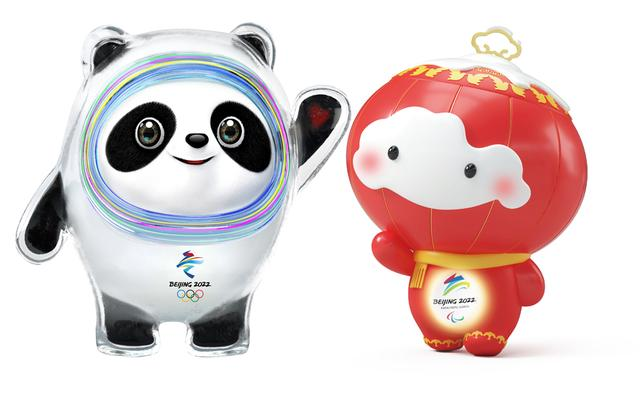

17 September, 2019, BEIJING – The Beijing Organising Committee for the 2022 Olympic and Paralympic Winter Games (BOCOG) launched the much-anticipated official Games mascots, Bing Dwen Dwen and Shuey Rhon Rhon, in a festive ceremony attended by more than 1,600 people at the Shougang Ice Hockey Arena today.

Bing Dwen Dwen(冰墩墩) & Shuey Rhon Rhon (雪容融)
The jovial panda mascot is an ambassador for winter sports. Bing (冰) is the Chinese character for ice, while Dwen Dwen (墩墩) is a common nickname in China for children that implies healthiness, cuteness, and ingenuousness – characteristics also shared with pandas.
Clothed in a full body suit of ice, a symbol of purity and strength, Bing Dwen Dwen wants to emulate the physical and mental power of Olympians, and to help spread the enduring Olympic spirit. The heart shape in its left palm represents the host country’s hospitality, and the mascot is expected to connect and bring joy to people participating and watching the Olympic Winter Games Beijing 2022 from all over the world.br/>
Shuey Rhon Rhon (雪容融) is a Chinese lantern child ready to welcome friends from around the world for a big party. Exuding positivity, the glow emanating from its heart symbolises the inspiring warmth, friendship, courage, and perseverance of Para athletes that light up the dreams of millions every day.
The Chinese lantern is a millennia-old cultural symbol associated with harvest, celebration, prosperity, and brightness. Red is the most auspicious and festive colour in the country, and is all the more fitting given that the Games will coincide with Chinese New Year celebrations in February and March 2022.
The overall design on Shuey Rhon Rhon draws from traditional Chinese papercut art and Ruyi ornaments, and features doves, Beijing’s iconic Temple of Heaven, and snow to symbolise peace, friendship, and good fortune.